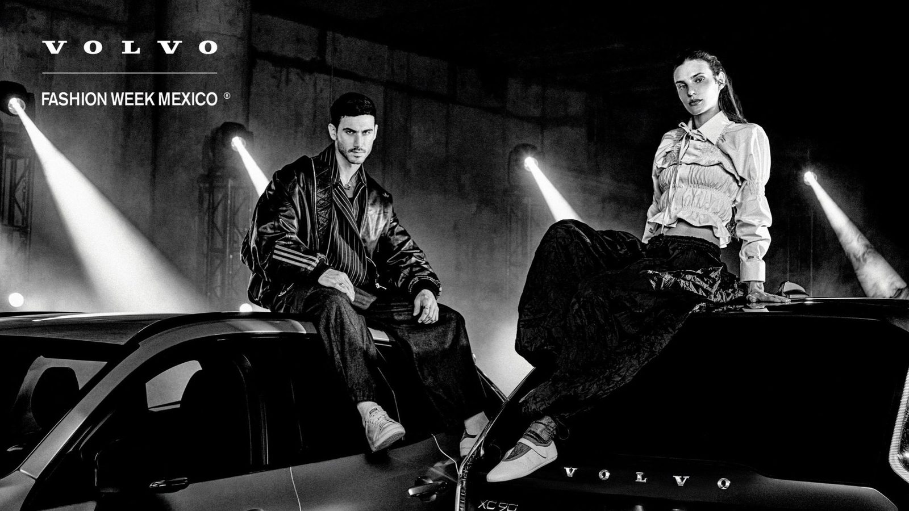
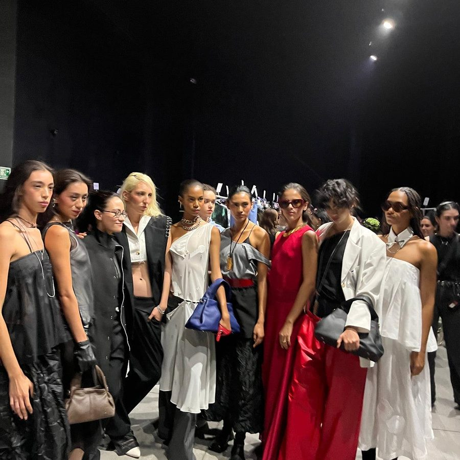

La moda después de la pasarela: qué queda cuando se apagan las luces
Campañas, colaboraciones y circulación digital: cómo la moda mexicana trasciende el desfile.
BackstageLo que pasó detrás de la pasarela
Maquillaje, peinado y los últimos minutos antes de salir.
Street styleLooks de la entrada: quién llegó cómo
Los outfits del público y los invitados.
EntrevistasConversación con una diseñadora emergente
Su proceso, sus materiales y qué sigue.

Guadalajara vs. CDMX: quién estuvo y quién invitó
Dos ediciones de Volvo Fashion Week México y la red de invitados, medios y marcas detrás.